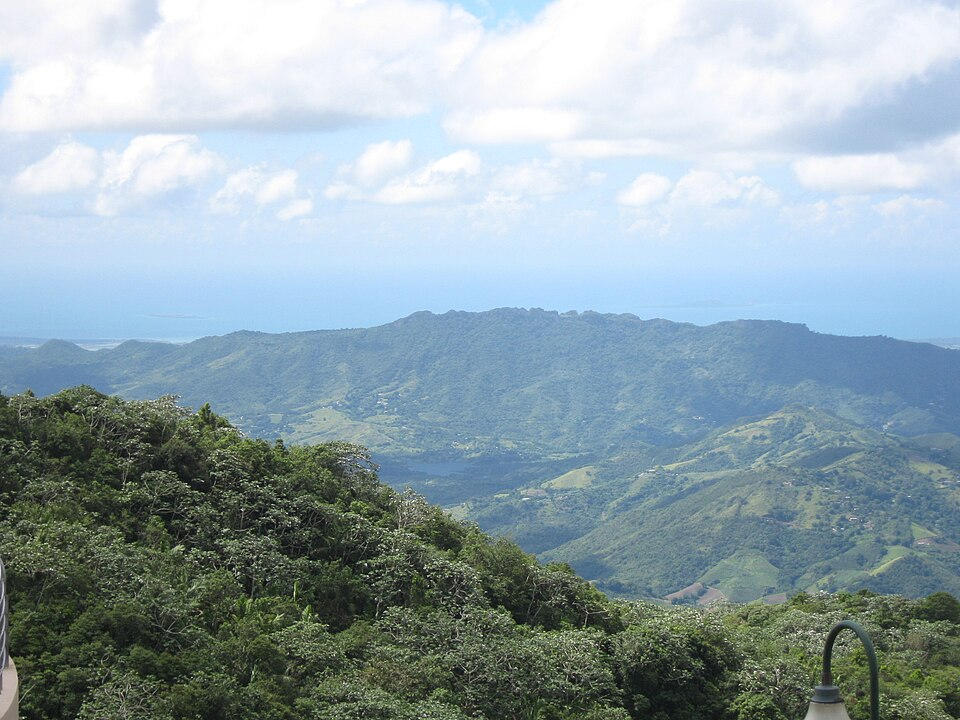
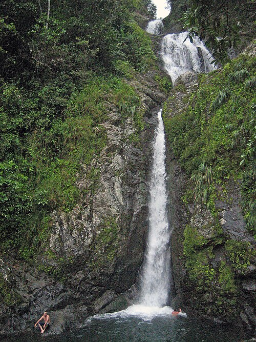

Where would you go?
For my vacation, I would visit Orocovis, Puerto Rico, a municipality located in the central mountainous region of the island. Orocovis is often referred to as the heart of Puerto Rico. The town is surrounded by beautiful mountains, winding roads, and breathtaking scenery. Unlike the coastal areas of Puerto Rico, Orocovis offers a peaceful mountain atmosphere and cooler temperatures. It is the perfect destination for anyone who wants to experience the natural beauty of Puerto Rico beyond its famous beaches.

Ratzer1. (2010). Cordillera Central Puerto Rico [Photograph]. Wikimedia Commons. Photograph source

What would you do?
During my vacation in Orocovis, I would visit Toro Verde Adventure Park, where visitors can experience exciting zipline adventures above the mountains. I would also explore Toro Negro State Forest, which offers hiking trails, beautiful scenery, and opportunities to enjoy nature. Another destination would be Cerro de Punta, the highest peak in Puerto Rico. Finally, I would visit the beautiful Dona Juana Waterfall to admire its natural surroundings.

Oquendo, J. (2009). Salto Doña Juana, Orocovis, Puerto Rico [Photograph]. Wikimedia Commons. Photograph source

Places to Visit in Orocovis
- Toro Verde Adventure Park
- Toro Negro State Forest
- Cerro de Punta
- Doña Juana Waterfall
What would you eat?
We cannot go to Puerto Rico without trying some of the local food! Thankfully, Orocovis has great food. During my vacation, I would visit Restaurante La Sombra, a local restaurant known for its delicious longaniza, a traditional Puerto Rican sausage. I would also enjoy other popular dishes, including yellow rice, tostones, and mofongo. Experiencing the local cuisine would be an important part of my vacation in Orocovis.

Bar Restaurante La Sombra y Longanizas Doña María. (n.d.). Longanizas en preparación [Photograph]. Photograph source